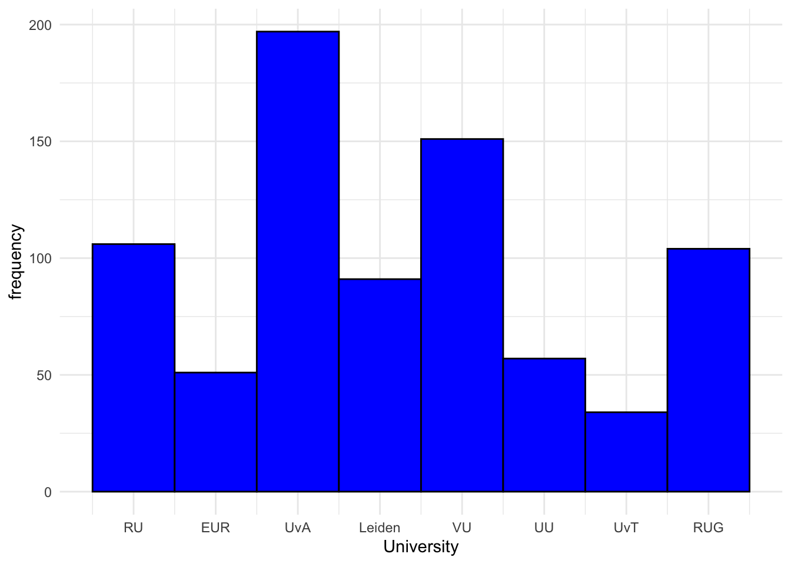
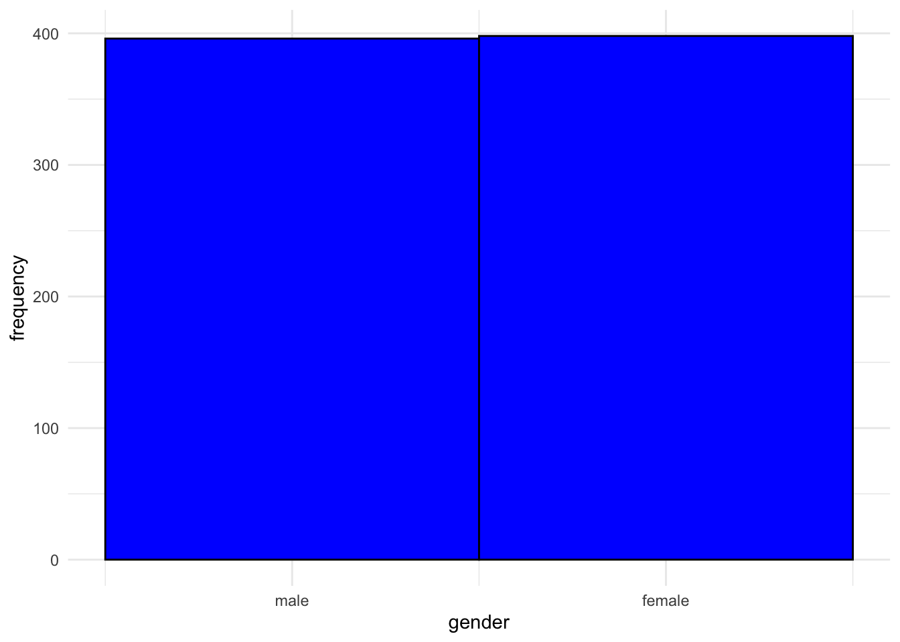
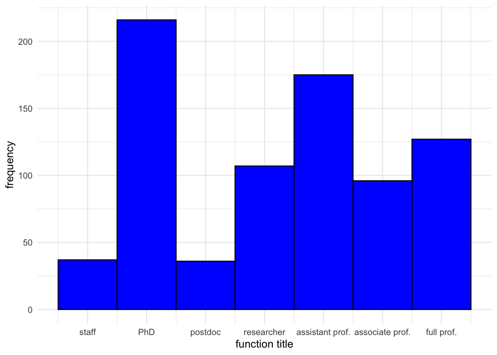
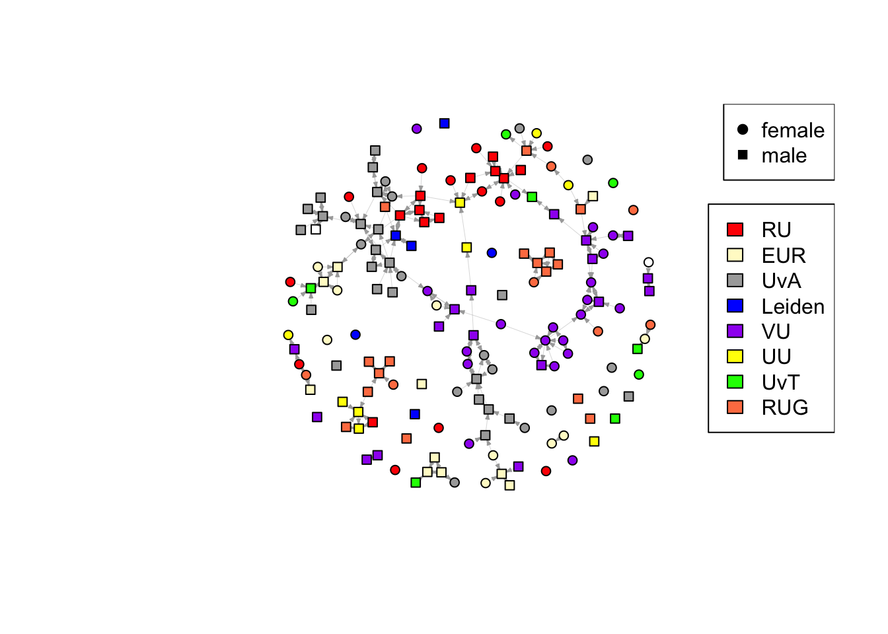
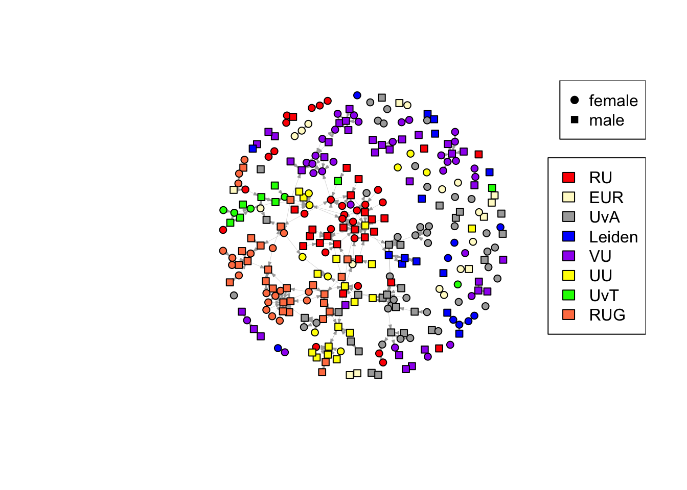
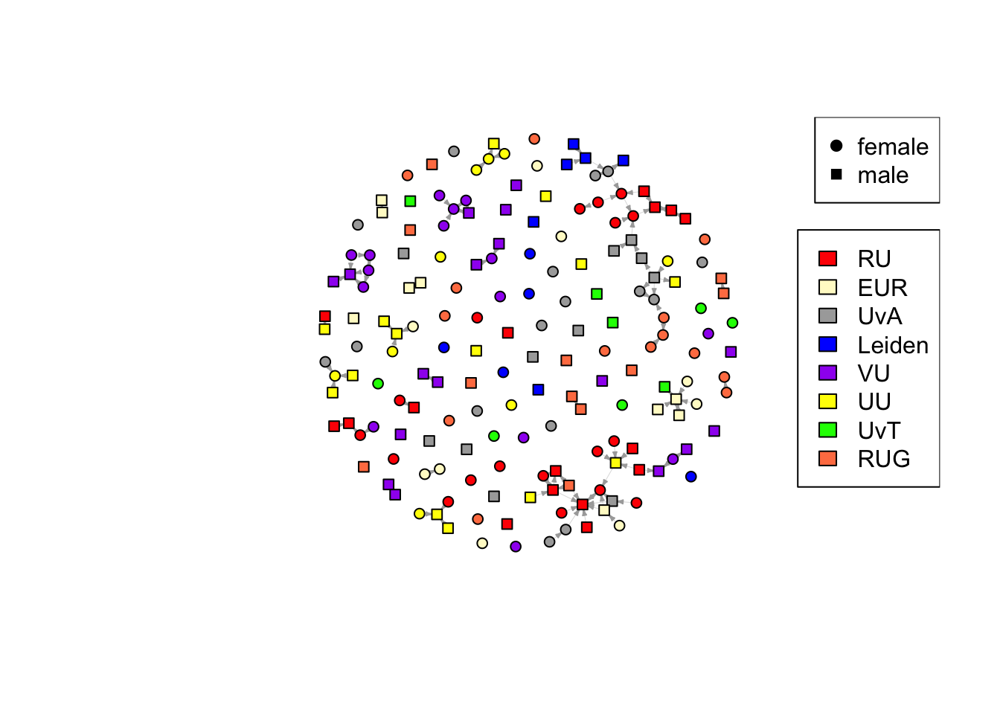

rm(list = ls())fpackage.check = function(packages) {
lapply(packages, FUN = function(x) {
if (!require(x, character.only = TRUE)) {
install.packages(x, dependencies = TRUE)
library(x, character.only = TRUE)
}
})
}
fsave = function(x, file = NULL, location = "./data/processed/") {
ifelse(!dir.exists("data"), dir.create("data"), FALSE)
ifelse(!dir.exists("data/processed"), dir.create("data/processed"), FALSE)
if (is.null(file))
file = deparse(substitute(x))
datename = substr(gsub("[:-]", "", Sys.time()), 1, 8)
totalname = paste(location, datename, file, ".rda", sep = "")
save(x, file = totalname) #need to fix if file is reloaded as input name, not as x.
}
fload = function(filename) {
load(filename)
get(ls()[ls() != "filename"])
}
fshowdf = function(x, ...) {
knitr::kable(x, digits = 2, "html", ...) |>
kableExtra::kable_styling(bootstrap_options = c("striped", "hover")) |>
kableExtra::scroll_box(width = "100%", height = "300px")
}
packages = c(
"RSiena", "tidyverse",
'dplyr', 'stringr', "igraph", "ggplot2"
)
fpackage.check(packages)## [[1]]
## NULL
##
## [[2]]
## NULL
##
## [[3]]
## NULL
##
## [[4]]
## NULL
##
## [[5]]
## NULL
##
## [[6]]
## NULLfcolnet = function(data = scholars, university = c("RU", "EUR", "UvA", "Leiden", "VU", "UU", "UvT", "RUG"), discipline = c("Sociologie", "Politicologie"), waves = list(c(2015,
2018), c(2019, 2023), c(2024, 2025)), type = c("first")) {
university = paste0('(', paste0(university, collapse='|' ), ')')
discipline = paste0('(', paste0(discipline, collapse='|' ), ')')
# step 1
demographics = data$demographics
sample = which(
(str_detect(demographics$universiteit.22, university)
| str_detect(demographics$universiteit.24, university)
| str_detect(demographics$universiteit.25, university)
) & (
str_detect(demographics$discipline.22, discipline)
| str_detect(demographics$discipline.24, discipline)
| str_detect(demographics$discipline.25, discipline)
) |> replace_na(FALSE))
demographics_soc = demographics[sample, ] |> drop_na(id)
# step 2
ids = demographics_soc$id |> unique()
scholars_sel = list()
for (id_ in ids){
scholars_sel[[id_]] = bind_rows(scholars$works) |>
filter(author_id == id_)
}
scholars_sel = bind_rows(scholars$works)
nwaves = length(waves)
nets = array(0, dim = c(nwaves, length(ids), length(ids)), dimnames = list(wave = 1:nwaves, ids,
ids))
dimnames(nets)
# step 3
df_works = tibble(
works_id = scholars_sel$id,
works_author = scholars_sel$authorships,
works_year = scholars_sel$publication_year
)
df_works = df_works[!duplicated(df_works), ]
# step 4
if (type == "first") {
for (j in 1:length(waves)) {
df_works_w = df_works[df_works$works_year >= waves[[j]][1] & df_works$works_year <= waves[[j]][2],
]
for (i in 1:nrow(df_works_w)) {
ego = df_works_w$works_author[i][[1]]$id[1]
alters = df_works_w$works_author[i][[1]]$id[-1]
if (sum(ids %in% ego) > 0 & sum(ids %in% alters) > 0) {
nets[j, which(ids %in% ego), which(ids %in% alters)] = 1
}
}
}
}
if (type == "last") {
for (j in 1:length(waves)) {
df_works_w = df_works[df_works$works_year >= waves[[j]][1] & df_works$works_year <= waves[[j]][2],
]
for (i in 1:nrow(df_works_w)) {
ego = rev(df_works_w$works_author[i][[1]]$id[1])
alters = rev(df_works_w$works_author[i][[1]]$id[-1])
if (sum(ids %in% ego) > 0 & sum(ids %in% alters) > 0) {
nets[j, which(ids %in% ego), which(ids %in% alters)] = 1
}
}
}
}
if (type == "all") {
for (j in 1:length(waves)) {
df_works_w = df_works[df_works$works_year >= waves[[j]][1] & df_works$works_year <= waves[[j]][2],
]
for (i in 1:nrow(df_works_w)) {
egos = df_works_w$works_author[i][[1]]$id
if (sum(ids %in% egos) > 0) {
nets[j, which(ids %in% egos), which(ids %in% egos)] = 1
}
}
diag(nets[j,,]) = 0
}
}
output = list()
output$data = demographics_soc
output$nets = nets
return(output)
}scholars = fload('data/processed/20251017scholars.Rda')colnet = fcolnet(scholars, university = c("RU", "EUR", "UvA", "Leiden", "VU", "UU", "UvT", "RUG"))
df_ego = bind_rows(colnet$data)Functions inspired by Hanne’s interdisciplinary cooperation functions.
# --- Function to count interuniversity ties ---
count_difuni <- function(adj_matrix, university) {
edges <- which(adj_matrix != 0, arr.ind = TRUE)
sum(
(university[edges[,1]] == 1 & university[edges[,2]] != 1) |
(university[edges[,1]] == 2 & university[edges[,2]] != 2) |
(university[edges[,1]] == 3 & university[edges[,2]] != 3) |
(university[edges[,1]] == 4 & university[edges[,2]] != 4) |
(university[edges[,1]] == 5 & university[edges[,2]] != 5) |
(university[edges[,1]] == 6 & university[edges[,2]] != 6) |
(university[edges[,1]] == 7 & university[edges[,2]] != 7) |
(university[edges[,1]] == 8 & university[edges[,2]] != 8)
)
}
# --- Function to count interuniversity ties female sender---
count_difuni_fem <- function(adj_matrix, university, female) {
edges <- which(adj_matrix != 0, arr.ind = TRUE)
sum(
(female[edges[,1]] == 1 & university[edges[,1]] == 1 & university[edges[,2]] != 1) |
(female[edges[,1]] == 1 & university[edges[,1]] == 2 & university[edges[,2]] != 2) |
(female[edges[,1]] == 1 & university[edges[,1]] == 3 & university[edges[,2]] != 3) |
(female[edges[,1]] == 1 & university[edges[,1]] == 4 & university[edges[,2]] != 4) |
(female[edges[,1]] == 1 & university[edges[,1]] == 5 & university[edges[,2]] != 5) |
(female[edges[,1]] == 1 & university[edges[,1]] == 6 & university[edges[,2]] != 6) |
(female[edges[,1]] == 1 & university[edges[,1]] == 7 & university[edges[,2]] != 7) |
(female[edges[,1]] == 1 & university[edges[,1]] == 8 & university[edges[,2]] != 8)
)
}
# --- Function to count interuniversity ties male sender---
count_difuni_male <- function(adj_matrix, university, female) {
edges <- which(adj_matrix != 0, arr.ind = TRUE)
sum(
(female[edges[,1]] == 0 & university[edges[,1]] == 1 & university[edges[,2]] != 1) |
(female[edges[,1]] == 0 & university[edges[,1]] == 2 & university[edges[,2]] != 2) |
(female[edges[,1]] == 0 & university[edges[,1]] == 3 & university[edges[,2]] != 3) |
(female[edges[,1]] == 0 & university[edges[,1]] == 4 & university[edges[,2]] != 4) |
(female[edges[,1]] == 0 & university[edges[,1]] == 5 & university[edges[,2]] != 5) |
(female[edges[,1]] == 0 & university[edges[,1]] == 6 & university[edges[,2]] != 6) |
(female[edges[,1]] == 0 & university[edges[,1]] == 7 & university[edges[,2]] != 7) |
(female[edges[,1]] == 0 & university[edges[,1]] == 8 & university[edges[,2]] != 8)
)
}
# --- Function to count intrauniversity ties ---
count_sameuni <- function(adj_matrix, university) {
edges <- which(adj_matrix != 0, arr.ind = TRUE)
sum(
(university[edges[,1]] == 1 & university[edges[,2]] == 1) |
(university[edges[,1]] == 2 & university[edges[,2]] == 2) |
(university[edges[,1]] == 3 & university[edges[,2]] == 3) |
(university[edges[,1]] == 4 & university[edges[,2]] == 4) |
(university[edges[,1]] == 5 & university[edges[,2]] == 5) |
(university[edges[,1]] == 6 & university[edges[,2]] == 6) |
(university[edges[,1]] == 7 & university[edges[,2]] == 7) |
(university[edges[,1]] == 8 & university[edges[,2]] == 8)
)
}
# --- Function to count intrauniversity ties female sender---
count_sameuni_fem <- function(adj_matrix, university, female) {
edges <- which(adj_matrix != 0, arr.ind = TRUE)
sum(
(female[edges[,1]] == 1 & university[edges[,1]] == 1 & university[edges[,2]] == 1) |
(female[edges[,1]] == 1 & university[edges[,1]] == 2 & university[edges[,2]] == 2) |
(female[edges[,1]] == 1 & university[edges[,1]] == 3 & university[edges[,2]] == 3) |
(female[edges[,1]] == 1 & university[edges[,1]] == 4 & university[edges[,2]] == 4) |
(female[edges[,1]] == 1 & university[edges[,1]] == 5 & university[edges[,2]] == 5) |
(female[edges[,1]] == 1 & university[edges[,1]] == 6 & university[edges[,2]] == 6) |
(female[edges[,1]] == 1 & university[edges[,1]] == 7 & university[edges[,2]] == 7) |
(female[edges[,1]] == 1 & university[edges[,1]] == 8 & university[edges[,2]] == 8)
)
}
# --- Function to count intrauniversity ties male sender---
count_sameuni_male <- function(adj_matrix, university, female) {
edges <- which(adj_matrix != 0, arr.ind = TRUE)
sum(
(female[edges[,1]] == 0 & university[edges[,1]] == 1 & university[edges[,2]] == 1) |
(female[edges[,1]] == 0 & university[edges[,1]] == 2 & university[edges[,2]] == 2) |
(female[edges[,1]] == 0 & university[edges[,1]] == 3 & university[edges[,2]] == 3) |
(female[edges[,1]] == 0 & university[edges[,1]] == 4 & university[edges[,2]] == 4) |
(female[edges[,1]] == 0 & university[edges[,1]] == 5 & university[edges[,2]] == 5) |
(female[edges[,1]] == 0 & university[edges[,1]] == 6 & university[edges[,2]] == 6) |
(female[edges[,1]] == 0 & university[edges[,1]] == 7 & university[edges[,2]] == 7) |
(female[edges[,1]] == 0 & university[edges[,1]] == 8 & university[edges[,2]] == 8)
)
}df_ego = df_ego |>
mutate(
funcs = case_when(
functie.22 == "PhD Candidate" ~ 1,
functie.24 == "PhD Candidate" ~ 1,
functie.25 == "PhD Candidate" ~ 1,
functie.22 == "Postdoctoral Researcher" ~ 2,
functie.24 == "Postdoctoral Researcher" ~ 2,
functie.25 == "Postdoctoral Researcher" ~ 2,
functie.22 == "Lecturer" ~ 3,
functie.24 == "Lecturer" ~ 3,
functie.25 == "Lecturer" ~ 3,
functie.22 == "Researcher" ~ 3,
functie.24 == "Researcher" ~ 3,
functie.25 == "Researcher" ~ 3,
functie.22 == "Assistant Professor" ~ 4,
functie.24 == "Assistant Professor" ~ 4,
functie.25 == "Assistant Professor" ~ 4,
functie.22 == "Associate Professor" ~ 5,
functie.24 == "Associate Professor" ~ 5,
functie.25 == "Associate Professor" ~ 5,
functie.22 == "Full Professor" ~ 6,
functie.24 == "Full Professor" ~ 6,
functie.25 == "Full Professor" ~ 6,
.default = 0
)
)
table(df_ego$functie.25)
table(df_ego$funcs, useNA = "always")
table(df_ego$gender, useNA = "always")
# 7 NA's
# A.J.G.M. van Montfort (male)
# F. Goedkoop (female)
# L. Zijlstra (male)
# S. Liu (female)
# Sixtine van Outryve d'Ydewalle (female)
# T. Nowak (male)
# Z.E. Pardoel (female)
# Manually fix missings
df_ego = df_ego |>
mutate(
gender = case_when(
naam == "A.J.G.M. van Montfort" ~ "male",
naam == "L. Zijlstra" ~ "male",
naam == "T. Nowak" ~ "male",
naam == "F. Goedkoop" ~ "female",
naam == "S. Liu" ~ "female",
naam == "Sixtine van Outryve d'Ydewalle" ~ "female",
naam == "Z.E. Pardoel" ~ "female",
gender == "female" ~ "female",
gender == "male" ~ "male",
))
#Numeric gender variable
df_ego = df_ego |>
mutate(
female = case_when(
gender == "female" ~ 1,
.default = 0
)
)
# Creating numeric university factor where latest known affiliation is used
df_ego$uni_22_num <- as.numeric(factor(
df_ego$universiteit.22,
levels = c("RU", "EUR", "UvA", "Leiden", "VU", "UU", "UvT", "RUG")
))
# numbers: 1=RU, 2=EUR, 3=WUR, 4=UvA, 5=Leiden, 6=VU, 7=UU, 8=UvT, 9=RUG.
df_ego$uni_24_num <- as.numeric(factor(
df_ego$universiteit.24,
levels = c("RU", "EUR", "UvA", "Leiden", "VU", "UU", "UvT", "RUG")
))
df_ego$uni_25_num <- as.numeric(factor(
df_ego$universiteit.25,
levels = c("RU", "EUR", "UvA", "Leiden", "VU", "UU", "UvT", "RUG")
))
df_ego$uni_22_24 <- ifelse (is.na(df_ego$uni_24_num), df_ego$uni_22_num, df_ego$uni_24_num)
df_ego$uni_num <- ifelse (is.na(df_ego$uni_25_num), df_ego$uni_22_24, df_ego$uni_25_num)
table(df_ego$uni_num, useNA = "always")
df_ego |>
filter(is.na(uni_num)) |>
select(naam, universiteit.22, universiteit.24, universiteit.25) |>
print()
# manually fix missing uni (Three remaining missings, affiliated with multiple dutch universities)
df_ego = df_ego |>
mutate(
uni_num = case_when(
naam == "Amy Verdun" ~ 4,
naam == "Catherine de Vries" ~ 3,
naam == "Chaïm la Roi" ~ 8,
naam == "Chlóe Tolmatcheff" ~ 8,
naam == "Geert-Jan Knoops" ~ 3,
naam == "Jonathan Mijs" ~ 2,
naam == "Otto Holman" ~ 3,
naam == "Sabine Mokry" ~ 4,
naam == "Sawitri Saharso" ~ 5,
naam == "Till Hovestadt" ~ 8,
uni_num == 1 ~ 1,
uni_num == 2 ~ 2,
uni_num == 3 ~ 3,
uni_num == 4 ~ 4,
uni_num == 5 ~ 5,
uni_num == 6 ~ 6,
uni_num == 7 ~ 7,
uni_num == 8 ~ 8,
))
#"Amy Verdun" Leiden (4)
#"Catherine de Vries" UvA (3)
#"Chaïm la Roi" RUG (8)
#"Chlóe Tolmatcheff" RUG (8)
#"Eric Cesne" UU/VU (NA)
#"Frank Takes" Leiden/UvA (NA)
#"Geert-Jan Knoops" UvA (3)
#"Jonathan Mijs" EUR (2)
#"Leonie Heres" VU/EUR (NA)
#"Otto Holman" UvA (3)
#"Sabine Mokry" Leiden (4)
#"Sawitri Saharso" VU (5)
#"Till Hovestadt" RUG (8)
df_ego = df_ego |>
mutate(uni_name = factor(uni_num, levels = 1:8, labels = c("RU", "EUR", "UvA", "Leiden", "VU", "UU", "UvT", "RUG")))
# Making university variable for robustness check, RU and UU combined:
df_ego = df_ego |>
mutate(uni_num_r = case_when(
uni_num == 1 ~ 1,
uni_num == 2 ~ 2,
uni_num == 3 ~ 3,
uni_num == 4 ~ 4,
uni_num == 5 ~ 5,
uni_num == 6 ~ 1,
uni_num == 7 ~ 6,
uni_num == 8 ~ 7,
))
# Save variables as constant Covariates for use in RSiena
funcs = coCovar(df_ego$funcs)
female = coCovar(df_ego$female)
uni = coCovar(df_ego$uni_num)
uni_r = coCovar(df_ego$uni_num_r)Figure 1 through 3 show the spread of actors across the three covariates wich will be used. In the spread of researchers across universities it is noteworthy that the universities in Amsterdam UvA and VU are the largest universities in the dataset. For interpretation of the results it is important to realise that they might have an outsized impact.
ggplot(df_ego, aes(x = uni_num)) + geom_histogram(binwidth = 1, fill = "blue", color = "black") + labs(x = "University",
y = "frequency") + scale_x_continuous(breaks = 1:8, labels = c("RU", "EUR", "UvA", "Leiden", "VU", "UU", "UvT", "RUG")) + scale_y_continuous() + theme_minimal()
ggplot(df_ego, aes(x = female)) + geom_histogram(binwidth = 1, fill = "blue", color = "black") + labs(x = "gender",
y = "frequency") + scale_x_continuous(breaks = 0:1, labels = c("male", "female")) + scale_y_continuous() + theme_minimal()
ggplot(df_ego, aes(x = funcs)) + geom_histogram(binwidth = 1, fill = "blue", color = "black") + labs(x = "function title",
y = "frequency") + scale_x_continuous(breaks = 0:6, labels = c("staff", "PhD", "postdoc", "researcher", "assistant prof.", "associate prof.", "full prof.")) + scale_y_continuous() + theme_minimal()
In the following section some descriptives of the collaboration network and their implications for this study are discussed.
net_w1 <- igraph::graph_from_adjacency_matrix(
colnet$nets[1,,],
mode = c("directed"),
weighted = NULL,
diag = FALSE,
add.colnames = NULL,)
net_w2 <- igraph::graph_from_adjacency_matrix(
colnet$nets[2,,],
mode = c("directed"),
weighted = NULL,
diag = FALSE,
add.colnames = NULL,)
net_w3 <- igraph::graph_from_adjacency_matrix(
colnet$nets[3,,],
mode = c("directed"),
weighted = NULL,
diag = FALSE,
add.colnames = NULL,)As Table 1 shows, the density in all waves is very low, between … and … . The first and last waves have a very similar amount of edges: 292 and 291 respectively. At 539, the edgecount in the second wave is much higher. This distribution is a consequence of how the data has been collected. The names of scholars in the data have been scraped in 2025, this means that they were not necessarily researchers during the first wave. As the largest group of researchers in the data is PhD students, this would make sense. The relatively low amount of ties in the third wave is likely attributable to that wave spanning less than two years while the other waves span 4 years. For the interpretation of the results this might mean that a PhD students might have an outsized effect on network evolution. As present study is focused on the network evolution of junior researchers this is not a major concern, but should be considered.
densitytable <- data.frame(
wave = c(1, 2, 3),
n_edges = c(ecount(net_w1), ecount(net_w2), ecount(net_w3)),
n_nodes = c(vcount(net_w1), vcount(net_w2), vcount(net_w3)),
density = c(edge_density(net_w1), edge_density(net_w2), edge_density(net_w3))
)
fshowdf(densitytable)| wave | n_edges | n_nodes | density |
|---|---|---|---|
| 1 | 292 | 794 | 0 |
| 2 | 539 | 794 | 0 |
| 3 | 291 | 794 | 0 |
ecount(net_w2)## [1] 539edge_density(net_w2)## [1] 0.000856042ecount(net_w3)## [1] 291edge_density(net_w3)## [1] 0.0004621674Table 2 shows, 208 dyads are connected by a single tie, and 42 Dyads have multiple ties. In wave 2, the amount of asymetrical dyads has more than doubled to 427 while the amount of mutual dyads only increased moderately to 56. This makes sense if many of the extra ties are PhD students as they tend to be first-authors.
Table 4 shows transitivity in wave one and two is very similar around 0.2. The triad census in Table 3 shows that amount of transitive triads between these waves have increased from 18 to 45 and decreased to 19 again in wave 3. This is a small proportion of possible triads, which means that triadic closure is likely not the driver of possible effects in the dynamic social network analysis. It is important to consider however that people working in universities can strong ties which are not visible because they have not published together in the study period. Therefore, there might still be unobserved triadic closure driving the effects.
# making triad df
network_dyads <- data.frame(
dyad_w1 = dyad_census(net_w1),
dyad_w2 = dyad_census(net_w2),
dyad_w3 = dyad_census(net_w3)
)
fshowdf(network_dyads)| dyad_w1.mut | dyad_w1.asym | dyad_w1.null | dyad_w2.mut | dyad_w2.asym | dyad_w2.null | dyad_w3.mut | dyad_w3.asym | dyad_w3.null |
|---|---|---|---|---|---|---|---|---|
| 42 | 208 | 314571 | 56 | 427 | 314338 | 16 | 259 | 314546 |
# making triad df
network_triads <- data.frame(
triads_w1 = triad_census(net_w1),
triads_w2 = triad_census(net_w2),
triads_w3 = triad_census(net_w3)
)
# Including triad names
triad_types <- c("003", "012", "102", "021D", "021U", "021C", "111D", "111U",
"030T", "030C", "201", "120D", "120U", "120C", "210", "300")
rownames(network_triads) <- triad_types
fshowdf(network_triads)| triads_w1 | triads_w2 | triads_w3 | |
|---|---|---|---|
| 003 | 82915337 | 82731511 | 82895413 |
| 012 | 163800 | 335978 | 204272 |
| 102 | 33053 | 44046 | 12619 |
| 021D | 93 | 155 | 98 |
| 021U | 122 | 457 | 171 |
| 021C | 129 | 267 | 103 |
| 111D | 87 | 161 | 26 |
| 111U | 69 | 65 | 12 |
| 030T | 18 | 45 | 19 |
| 030C | 0 | 1 | 0 |
| 201 | 15 | 10 | 1 |
| 120D | 7 | 16 | 2 |
| 120U | 5 | 12 | 6 |
| 120C | 5 | 10 | 0 |
| 210 | 4 | 8 | 1 |
| 300 | 0 | 2 | 1 |
network_transitivity <- data.frame(
transit_w1 = transitivity(net_w1),
transit_w2 = transitivity(net_w2),
transit_w3 = transitivity(net_w3)
)
fshowdf(network_transitivity)| transit_w1 | transit_w2 | transit_w3 |
|---|---|---|
| 0.19 | 0.2 | 0.17 |
# --- Wave 1: clean NAs ---
valid_nodes_w1 <- which(!is.na(df_ego$uni_num))
adj_w1_clean <- colnet$nets[1, valid_nodes_w1, valid_nodes_w1]
uni_w1_clean <- df_ego$uni_num[valid_nodes_w1]
fem_w1_clean <- df_ego$female[valid_nodes_w1]
#df_ego |>
# filter(is.na(uni_num)) |>
# --- Wave 2: clean NAs ---
valid_nodes_w2 <- which(!is.na(df_ego$uni_num))
adj_w2_clean <- colnet$nets[2, valid_nodes_w2, valid_nodes_w2]
uni_w2_clean <- df_ego$uni_num[valid_nodes_w2]
fem_w2_clean <- df_ego$female[valid_nodes_w2]
# --- Wave 3: clean NAs ---
valid_nodes_w3 <- which(!is.na(df_ego$uni_num))
adj_w3_clean <- colnet$nets[3, valid_nodes_w3, valid_nodes_w3]
uni_w3_clean <- df_ego$uni_num[valid_nodes_w3]
fem_w3_clean <- df_ego$female[valid_nodes_w3]
# Count number of inter- and intra-university ties
# Wave 1 interuni
interuni_w1 <- count_difuni(adj_w1_clean, uni_w1_clean)
interuni_w1_fem <- count_difuni_fem(adj_w1_clean, uni_w1_clean, fem_w1_clean)
interuni_w1_male <- count_difuni_male(adj_w1_clean, uni_w1_clean, fem_w1_clean)
#wave 2 intrauni
intrauni_w1 <- count_sameuni(adj_w1_clean, uni_w1_clean)
intrauni_w1_fem <- count_sameuni_fem(adj_w1_clean, uni_w1_clean, fem_w1_clean)
intrauni_w1_male <- count_sameuni_male(adj_w1_clean, uni_w1_clean, fem_w1_clean)
# Wave 2, inter-uni
interuni_w2 <- count_difuni(adj_w2_clean, uni_w2_clean)
interuni_w2_fem <- count_difuni_fem(adj_w2_clean, uni_w2_clean, fem_w2_clean)
interuni_w2_male <- count_difuni_male(adj_w2_clean, uni_w2_clean, fem_w2_clean)
# Wave 2, intra-uni
intrauni_w2 <- count_sameuni(adj_w2_clean, uni_w2_clean)
intrauni_w2_fem <- count_sameuni_fem(adj_w2_clean, uni_w2_clean, fem_w2_clean)
intrauni_w2_male <- count_sameuni_male(adj_w2_clean, uni_w2_clean, fem_w2_clean)
# wave 3, inter-uni
interuni_w3 <- count_difuni(adj_w3_clean, uni_w3_clean)
interuni_w3_fem <- count_difuni_fem(adj_w3_clean, uni_w3_clean, fem_w3_clean)
interuni_w3_male <- count_difuni_male(adj_w3_clean, uni_w3_clean, fem_w3_clean)
# wave 3, intra-uni
intrauni_w3 <- count_sameuni(adj_w3_clean, uni_w3_clean)
intrauni_w3_fem <- count_sameuni_fem(adj_w3_clean, uni_w3_clean, fem_w3_clean)
intrauni_w3_male <- count_sameuni_male(adj_w3_clean, uni_w3_clean, fem_w3_clean)Research question 1 can be answered using the Table below showing the sum of all inter-university ties and the sum of all intra-university ties. In line with the first hypothesis, the amount of inter-university ties is substantially lower than the amount of interdisciplinary ties in all waves. the proporiton of inter-university ties even decreases in later waves. This might be a result of the proportion of junior researchers being relatively higher in later waves.
Table 4. Intra- and inter-university ties
# --- Create summary table ---
interuni_table <- data.frame(
wave = c(1, 2, 3),
interuni_ties = c(interuni_w1, interuni_w2, interuni_w3),
intrauni_ties = c(intrauni_w1, intrauni_w2, intrauni_w3)
)
# --- Show results ---
fshowdf(interuni_table)| wave | interuni_ties | intrauni_ties |
|---|---|---|
| 1 | 90 | 199 |
| 2 | 121 | 420 |
| 3 | 52 | 239 |
The Table below shows how the proportion of intra and inter-university ties does not show clear genderdifferences accros the waves. This is not in line with the second hypothesis and suggests the hypothesized gender differences might not be significant in the dynamic social network analysis.
# --- Create summary table ---
interuni_table_g <- data.frame(
wave = c(1, 2, 3),
fem_interuni = c(interuni_w1_fem, interuni_w2_fem, interuni_w3_fem),
male_interuni = c( interuni_w1_male, interuni_w2_male, interuni_w3_male),
fem_intrauni = c(intrauni_w1_fem, intrauni_w2_fem, intrauni_w3_fem),
male_intrauni = c(intrauni_w1_male, intrauni_w2_male, intrauni_w3_male)
)
# --- Show results ---
fshowdf(interuni_table_g)| wave | fem_interuni | male_interuni | fem_intrauni | male_intrauni |
|---|---|---|---|---|
| 1 | 38 | 52 | 76 | 123 |
| 2 | 55 | 66 | 205 | 215 |
| 3 | 20 | 32 | 133 | 106 |
AI disclaimer: I wasn’t able to find the time to figure out a fast and efficient way to make the matrix I needed so I used a large language model to show an efficient solution. I did make sure I understood the process and amended the code to produce nicer results.
The Tables below show the sum of collaborations between scholars across all pairs of universities. As expected most collaborations are within universities. However, the amount of scientists from Radboud university who collaborate with scientists from University of Utrecht is substantially higher. To test whether this pair forms an influential case causing the result to be biased towards more inter-university collaboration, Radboud University and University of Utrecht will be combined in an a fourth RSiena model.
# 2. Create the University Indicator Matrix (G)
# This matrix will have 'N' rows (one for each node/person) and 'num_unis' columns.
# A '1' at G[i, j] means node 'i' belongs to university 'j'.
# We use 'model.matrix' for an efficient, sparse-like creation of the indicator matrix.
# The 0 + part prevents an intercept column.
# The 'factor()' ensures the column names/indices match the university numbers (1-8).
g_w1 <- model.matrix(~ 0 + factor(df_ego$uni_num[valid_nodes_w1]), data = df_ego[valid_nodes_w1,])
# 3. Rename columns of G to be the university IDs (optional but helpful)
colnames(g_w1) <- paste0(c("RU", "EUR", "UvA", "Leiden", "VU", "UU", "UvT", "RUG"))
# 4. Calculate the Aggregated Matrix (A_group)
# The matrix multiplication t(G) %*% adj_w1_clean %*% G aggregates the ties:
# t(G) %*% adj_w1_clean: Aggregates ties *sent* from each university to each node.
# (t(G) %*% adj_w1_clean) %*% G: Aggregates ties from a sending university group to a receiving university group.
unimatrix_w1 <- t(g_w1) %*% adj_w1_clean %*% g_w1
# 5. Review the result
# The matrix A_group now has 'num_unis' rows and 'num_unis' columns.
# The diagonal elements (A_group[i, i]) represent the **intra-university ties**
# (sum of ties *within* university 'i').
# The off-diagonal elements (A_group[i, j] where i != j) represent the **inter-university ties**
# (sum of ties *from* university 'i' *to* university 'j').
fshowdf(unimatrix_w1)| RU | EUR | UvA | Leiden | VU | UU | UvT | RUG | |
|---|---|---|---|---|---|---|---|---|
| RU | 25 | 0 | 7 | 1 | 2 | 8 | 2 | 2 |
| EUR | 1 | 17 | 3 | 0 | 2 | 0 | 2 | 2 |
| UvA | 0 | 1 | 67 | 4 | 6 | 1 | 1 | 1 |
| Leiden | 1 | 0 | 2 | 4 | 1 | 0 | 0 | 0 |
| VU | 2 | 2 | 3 | 0 | 53 | 2 | 1 | 0 |
| UU | 1 | 0 | 1 | 0 | 0 | 5 | 0 | 5 |
| UvT | 0 | 5 | 0 | 0 | 1 | 0 | 4 | 1 |
| RUG | 3 | 2 | 2 | 1 | 2 | 5 | 1 | 24 |
# Wave 2
g_w2<- model.matrix(~ 0 + factor(df_ego$uni_num[valid_nodes_w2]), data = df_ego[valid_nodes_w2,])
# 3. Rename columns of G to be the university IDs (optional but helpful)
colnames(g_w2) <- paste0(c("RU", "EUR", "UvA", "Leiden", "VU", "UU", "UvT", "RUG"))
unimatrix_w2 <- t(g_w2) %*% adj_w2_clean %*% g_w2
fshowdf(unimatrix_w2)| RU | EUR | UvA | Leiden | VU | UU | UvT | RUG | |
|---|---|---|---|---|---|---|---|---|
| RU | 68 | 0 | 5 | 0 | 2 | 17 | 3 | 2 |
| EUR | 3 | 30 | 1 | 0 | 0 | 0 | 2 | 1 |
| UvA | 3 | 2 | 81 | 4 | 5 | 8 | 0 | 3 |
| Leiden | 2 | 0 | 4 | 24 | 3 | 0 | 0 | 1 |
| VU | 3 | 1 | 2 | 2 | 95 | 2 | 0 | 0 |
| UU | 5 | 2 | 1 | 1 | 2 | 30 | 1 | 2 |
| UvT | 1 | 5 | 0 | 0 | 0 | 2 | 20 | 0 |
| RUG | 6 | 1 | 4 | 0 | 2 | 4 | 1 | 72 |
# Wave 3
g_w3<- model.matrix(~ 0 + factor(df_ego$uni_num[valid_nodes_w3]), data = df_ego[valid_nodes_w3,])
# 3. Rename columns of G to be the university IDs (optional but helpful)
colnames(g_w3) <- paste0(c("RU", "EUR", "UvA", "Leiden", "VU", "UU", "UvT", "RUG"))
unimatrix_w3 <- t(g_w3) %*% adj_w3_clean %*% g_w3
fshowdf(unimatrix_w3)| RU | EUR | UvA | Leiden | VU | UU | UvT | RUG | |
|---|---|---|---|---|---|---|---|---|
| RU | 43 | 0 | 1 | 0 | 1 | 9 | 1 | 0 |
| EUR | 2 | 23 | 1 | 0 | 0 | 1 | 1 | 0 |
| UvA | 7 | 1 | 38 | 1 | 2 | 2 | 0 | 1 |
| Leiden | 0 | 0 | 1 | 12 | 1 | 0 | 0 | 0 |
| VU | 1 | 0 | 0 | 0 | 47 | 0 | 0 | 0 |
| UU | 5 | 0 | 3 | 0 | 0 | 26 | 0 | 0 |
| UvT | 0 | 3 | 0 | 0 | 0 | 0 | 12 | 0 |
| RUG | 4 | 2 | 1 | 0 | 0 | 0 | 0 | 38 |
The network plots below show clear clusters of universities.
# Plot wave 1
noisolates_1 = rowSums(colnet$nets[1,,]) > 0
netnew_1 = colnet$nets[1,noisolates_1,noisolates_1]
ego_noiso_1 = df_ego[noisolates_1, ]
net_noiso_1 <- igraph::graph_from_adjacency_matrix(
netnew_1, #now, I take the second wave
mode = c("directed"),
weighted = NULL,
diag = FALSE,
add.colnames = NULL,)
l <- layout_with_fr(net_noiso_1)
plot(net_noiso_1,
vertex.color = ifelse(ego_noiso_1$uni_num == "1", "red", #RU
ifelse(ego_noiso_1$uni_num == "2", "lemonchiffon", #EUR
ifelse(ego_noiso_1$uni_num == "3", "darkgrey", #UvA
ifelse(ego_noiso_1$uni_num == "4", "blue", #Leiden
ifelse(ego_noiso_1$uni_num == "5", "purple",#VU
ifelse(ego_noiso_1$uni_num == "6", "yellow",#UU
ifelse(ego_noiso_1$uni_num == "7", "green",#UvT
ifelse(ego_noiso_1$uni_num == "8", "coral", "white")))))))),#RUG
vertex.shape = ifelse(ego_noiso_1$female == 1, "circle", "square"),
vertex.label = NA,
vertex.size = 5,
edge.width = 0.2,
edge.arrow.size =0.2,
layout = l,)
legend("topright",
legend=c("RU", "EUR", "UvA", "Leiden", "VU", "UU", "UvT", "RUG"),
fill = c("red", "lemonchiffon", "darkgrey", "blue", "purple", "yellow", "green", "coral"),
border = "black",
inset = c(0, 0.25))
legend("topright",
legend=c("female", "male"),
pch = c(19, 15))
# Plot wave 2
noisolates_2 = rowSums(colnet$nets[2,,]) > 0
netnew_2 = colnet$nets[2,noisolates_2,noisolates_2]
ego_noiso_2 = df_ego[noisolates_2, ]
net_noiso_2 <- igraph::graph_from_adjacency_matrix(
netnew_2, #now, I take the second wave
mode = c("directed"),
weighted = NULL,
diag = FALSE,
add.colnames = NULL,)
V(net_noiso_2)$size = ego_noiso_2$funcs * 0.5+ 4 #after some trial and error
#vertex.size = V(net_noiso_2)$size)
l <- layout_with_fr(net_noiso_2)
plot(net_noiso_2,
vertex.color = ifelse(ego_noiso_2$uni_num == "1", "red", #RU
ifelse(ego_noiso_2$uni_num == "2", "lemonchiffon", #EUR
ifelse(ego_noiso_2$uni_num == "3", "darkgrey", #UvA
ifelse(ego_noiso_2$uni_num == "4", "blue", #Leiden
ifelse(ego_noiso_2$uni_num == "5", "purple", #VU
ifelse(ego_noiso_2$uni_num == "6", "yellow", #UU
ifelse(ego_noiso_2$uni_num == "7", "green", #UvT
ifelse(ego_noiso_2$uni_num == "8", "coral", "white")))))))), #RUG
vertex.shape = ifelse(ego_noiso_2$female == 1, "circle", "square"),
vertex.label = NA,
vertex.size = 5, #V(net_noiso_2)$size,
edge.width = 0.2,
edge.arrow.size =0.2,
layout = l)
legend("topright",
legend=c("RU", "EUR", "UvA", "Leiden", "VU", "UU", "UvT", "RUG"),
fill = c("red", "lemonchiffon", "darkgrey", "blue", "purple", "yellow", "green", "coral"),
border = "black",
inset = c(0, 0.25))
legend("topright",
legend=c("female", "male"),
pch = c(19, 15))
# Plot wave 3
noisolates_3 = rowSums(colnet$nets[3,,]) > 0
netnew_3 = colnet$nets[3,noisolates_3,noisolates_3]
ego_noiso_3 = df_ego[noisolates_3, ]
net_noiso_3 <- igraph::graph_from_adjacency_matrix(
netnew_3, #now, I take the second wave
mode = c("directed"),
weighted = NULL,
diag = FALSE,
add.colnames = NULL,)
l <- layout_with_fr(net_noiso_3)
plot(net_noiso_3,
vertex.color = ifelse(ego_noiso_3$uni_num == "1", "red", #RU
ifelse(ego_noiso_3$uni_num == "2", "lemonchiffon", #EUR
ifelse(ego_noiso_3$uni_num == "3", "darkgrey", #UvA
ifelse(ego_noiso_3$uni_num == "4", "blue", #Leiden
ifelse(ego_noiso_3$uni_num == "5", "purple",#VU
ifelse(ego_noiso_3$uni_num == "6", "yellow",#UU
ifelse(ego_noiso_3$uni_num == "7", "green",#UvT
ifelse(ego_noiso_3$uni_num == "8", "coral", "white")))))))),#RUG
vertex.shape = ifelse(ego_noiso_3$female == 1, "circle", "square"),
vertex.label = NA,
vertex.size = 5,
edge.width = 0.2,
edge.arrow.size =0.2,
layout = l)
legend("topright",
legend=c("RU", "EUR", "UvA", "Leiden", "VU", "UU", "UvT", "RUG"),
fill = c("red", "lemonchiffon", "darkgrey", "blue", "purple", "yellow", "green", "coral"),
border = "black",
inset = c(0, 0.25))
legend("topright",
legend=c("female", "male"),
pch = c(19, 15))